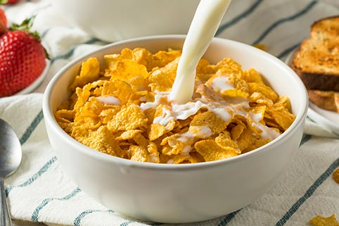

Milk and cereal

Description
You'll learn how to make a totally normal and conventional
bowl of milk and cereal.
Ingredients:
- milk
- cereal
- bowl
- teaspoon
- tablespoon (if you are fat)
Preparation:
- Put some milk in the bowl.
- Put some cereal in the bowl.
- Use the spoon to eat.